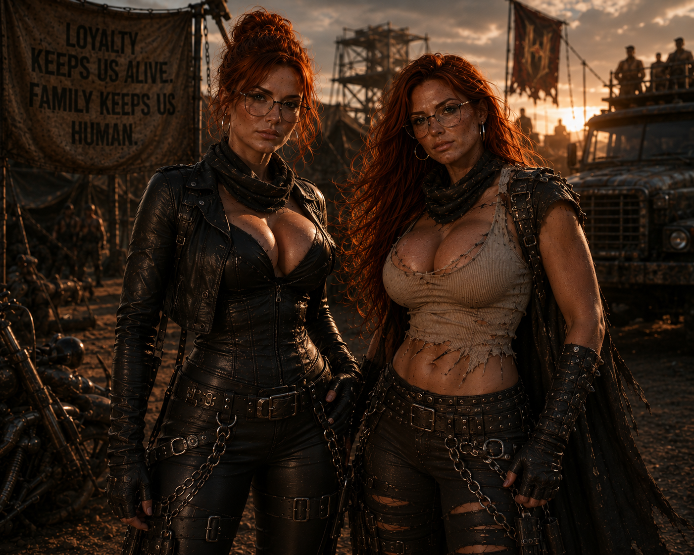
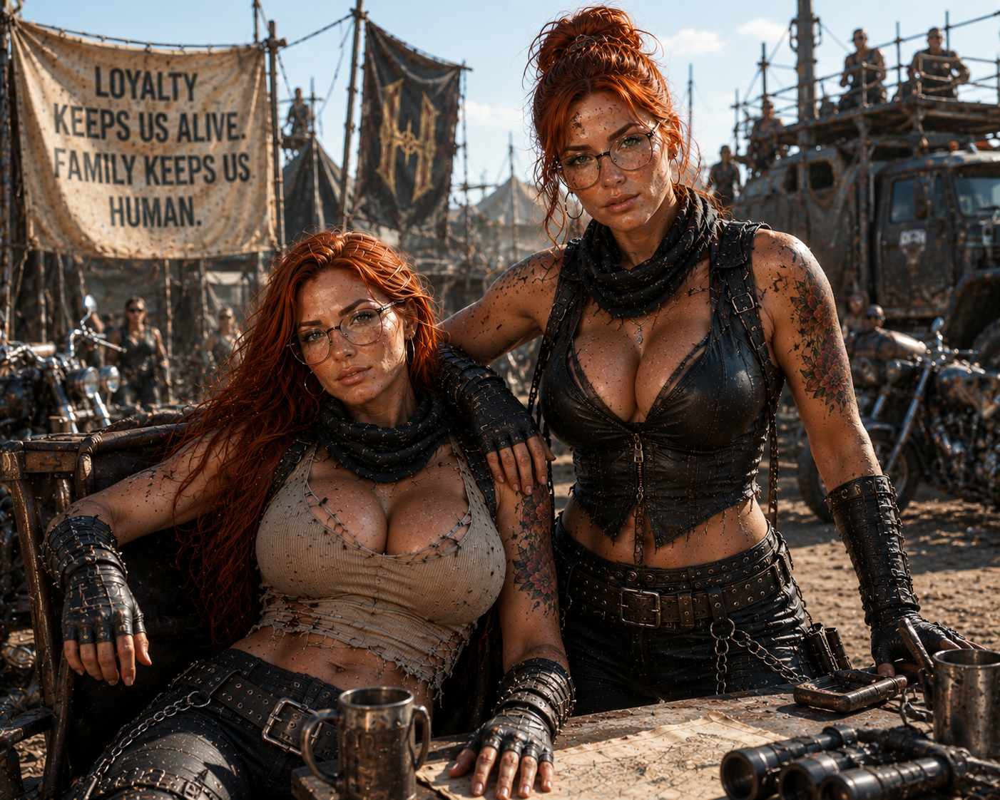

Filha de Jack e Alice. Sua imagem com Diana foi recuperada; função, localização e destino aguardam a lore oficial.
O registro confirma que Mary e Diana permaneceram juntas em algum momento. Nenhuma outra conclusão será registrada antes da lore oficial.
